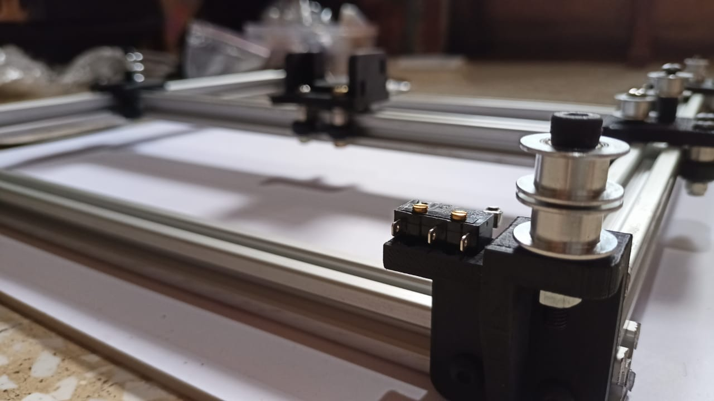
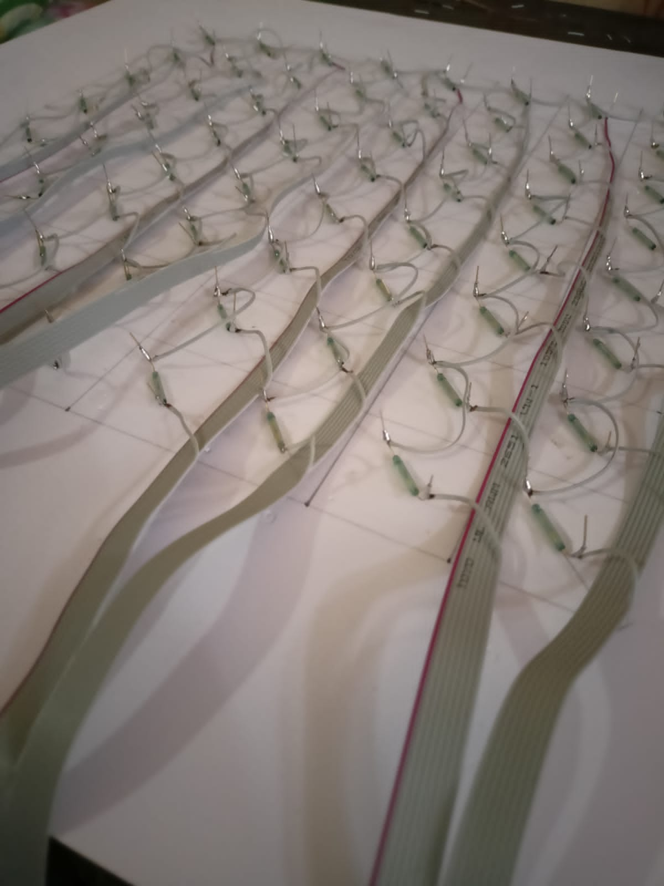
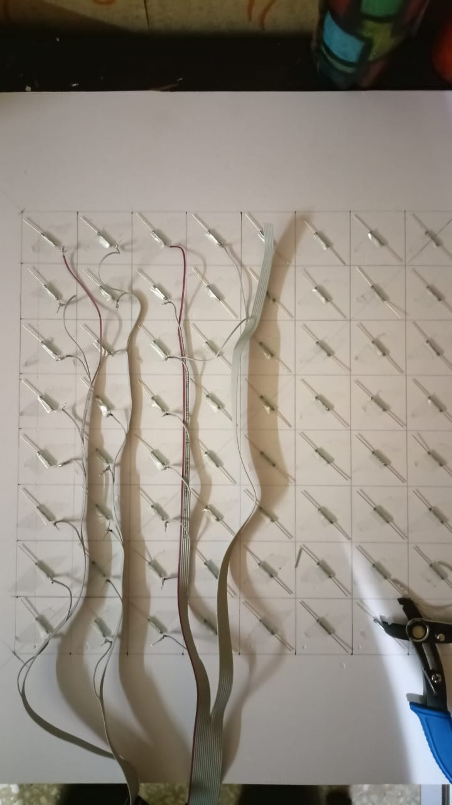
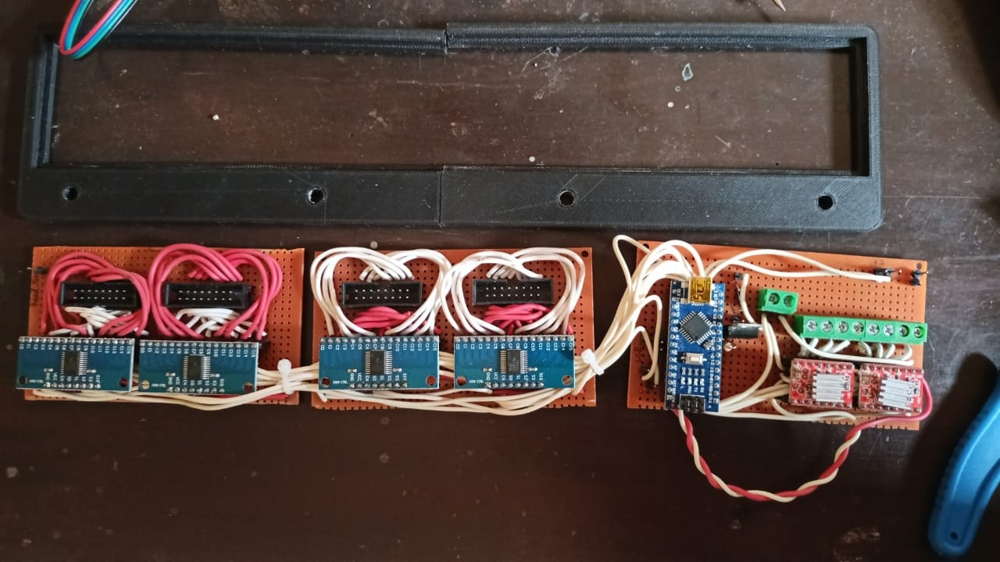

Project Overview
Chess has been a constant in my life for years — I'm a FIDE-rated player and spend a lot of time thinking about the game. That made an automated chessboard a natural personal project: a board that can physically move pieces on its own using a magnet hidden underneath. The concept is elegant — no robotic arm reaching over the board, just pieces gliding across the surface as if by themselves.
The system uses a CoreXY gantry beneath the board to position an electromagnet, combined with a reed switch matrix embedded in each square to track piece positions. I made significant progress building the mechanical system and sensor array, though full integration and autonomous operation are still works in progress. This project pushed me into new territory across mechanical design, electronics, and embedded systems.

CoreXY Gantry Mechanism
The motion system is built on a CoreXY belt configuration with V-slot aluminum extrusion rails. Two NEMA 17 stepper motors drive a single carriage through a crossed-belt arrangement, where both motors act together to move in X or Y — this keeps the motors stationary at the frame rather than riding on the moving axis, reducing the effective moving mass and improving responsiveness.
The carriage rides on V-slot wheels and can traverse the full 8×8 grid area. Limit switches at the frame corners provide homing references. Getting the belt tension balanced and the carriage running smoothly without binding was the trickiest mechanical challenge — minor frame squareness errors had a visible effect on diagonal travel accuracy.

Electromagnetic Piece Mover
The carriage carries a 12V DC electromagnet mounted flush with the underside of the board surface. When energized, it attracts the steel core inside each chess piece strongly enough to drag it across the board. Turning the magnet off releases the piece cleanly. The electromagnet is powerful enough to move a piece through the 5mm foamboard surface, but weak enough that it won't accidentally drag adjacent pieces — the gap and piece base diameter were chosen to give enough selectivity.
Moving around an occupied square requires routing the carriage through half-square diagonal paths to avoid catching neighboring pieces — this adds path planning complexity that I started mapping out but haven't fully implemented in firmware yet.
Reed Switch Sensor Matrix
Each of the 64 squares on the board has a reed switch embedded beneath it, triggering when a chess piece (with a small magnet in its base) is present. The switches are wired into an 8×8 matrix and read through a set of multiplexer ICs, allowing the Arduino to scan the entire board state with a handful of digital pins rather than 64 dedicated inputs.
Soldering and wiring 64 reed switches with consistent geometry was one of the most time-intensive parts of the build. I organized the wiring into ribbon cable bundles to keep it manageable. Getting consistent switch triggering across the board required careful magnet sizing — too weak and distant squares wouldn't trigger reliably; too strong and adjacent squares would false-positive.


Electronics and Control
The electronics stack is built around an Arduino Nano, two A4988 stepper motor drivers for the X and Y axes, and three 74HC4067 16-channel multiplexers to handle the sensor matrix. Everything is assembled on perfboard rather than a custom PCB, which made debugging easier but added bulk. The electromagnet is switched through a relay module controlled by a digital output pin.
Power comes from a 12V supply shared between the stepper drivers and electromagnet, with the Arduino running off USB or a separate 5V rail. Keeping the high-current electromagnet switching from injecting noise into the sensor readings required some basic decoupling — a lesson learned after early sensor reads came back erratic when the magnet was switching.

Software and Where I Got To
The firmware handles stepper motion in steps-per-square units, homing sequences on startup, reed switch polling through the multiplexers, and electromagnet control. The motion primitives — move to square (row, col), energize, move, de-energize — work reliably in isolation. The sensor scanning loop correctly reads piece presence across the full board.
What I didn't get to: integrating a chess engine to generate moves and translating those moves into full piece-routing sequences, including the collision-avoidance paths around occupied squares. That integration is the remaining gap between where the project sits now and a fully autonomous board. It's a clean software problem at this point — the hardware is capable, and completing it is something I plan to come back to.
What I Learned
This project gave me hands-on experience with CoreXY motion systems, stepper driver tuning, multiplexed sensor networks, and the practical realities of building hardware that lives at the boundary of mechanical, electrical, and software work. Debugging a system where all three interact simultaneously — and where a mechanical binding issue looks identical to a firmware bug until you spend an hour isolating it — sharpened how I approach system-level troubleshooting.
Making significant progress on something this ambitious while it's still incomplete taught me as much as finishing a simpler project would have. I know exactly what's left and how I'd approach it — and I'm looking forward to getting back to it.